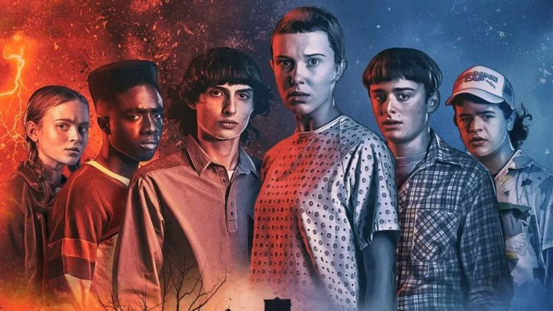

O Mundo Invertido
O Mundo Invertido parece uma cópia do nosso mundo, mas com criaturas horrendas, tempestades assustadoras, muita escuridão e entidades malignas. Um reino controlado por Vecna, que tem planos de trazer tudo isso ao nosso mundo.

Stranger Things Vol. 5
A 5ª temporada de Stranger Things narra a batalha final em Hawkins (1987), com a cidade em quarentena após Vecna fundir o Mundo Invertido ao real. Will Byers, infectado desde 1983, atua como radar contra Vecna, que busca novas crianças.
A segunda série mais assistida da Netflix
-

-

-

O Clube Dungeons & Dragons
Para deter Vecna, os heróis de Stranger Things também precisam de você. O Clube de D&D mais famoso de Hawkings está com vagas abertas para sua próxima aventura.